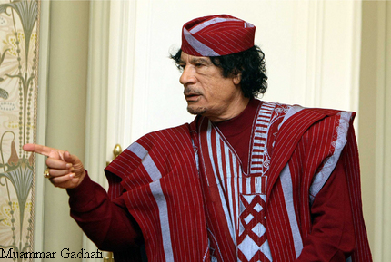

When Yoweri Museveni of Uganda came to power 25 years ago, he told reporters that one of the problems of leadership in Africa is that leaders stay too long in power and that they don't know when to quit. He said when a head-of-state is in office too long he begins to think he's invincible and "power" becomes his alcohol-his driving force.
When we last took stock, Museveni will be spending 25 years in office in his palace in Kampala; and because he recently won the last election staged this month his tenure in office could be extended by another five years. Granted, Museveni brought Uganda out of the economic and political doldrums which stymied the country following long years of turmoil under the vicious regime of the erstwhile and dictatorial Idi Amin; and the mayhem and destruction caused by the brutal forces of the Lords Resistance Army (LRA), a group of bandits who claim to be fighting a just cause from hell.
Yet we think it's time for someone to remind Museveni of the remarks he made more than 20 years ago to the effect that he was not prepared to spend long years in power in the same fashion that the Great Madiba Nelson Mandela did in South Africa shortly after independence from the white racists who instituted an unforgivable regime on the southern end of the continent for 46 years. Mandela came to power and after five years left the scene because he felt instinctively that power was not meant for him alone to wield. The trouble with staying too long in power is that one gives the impression that the entire country is bereft of good and intelligent leaders and that the nation will do badly or worse without the presence of the leader who insists he's the only one fit to manage the land. That's the story Museveni is trying now to tell his people by not following his own advice. And, if one might add, that's the same thing Egypt's deposed despot Hosni Mubarak tried to tell his people in the last gasp of his notorious regime which eventually collapsed under the heavy weight of protests from the so-called Facebook revolutionaries, young people who want to play ball in the ever-changing world of new technologies and market forces.
Mubarak's predictions and fears of cataclysmic machinations if he leaves power at the time the revolutionaries clamoured for his removal have not happened. Since he left many weeks ago, Egypt has not fallen into the hands of more dictatorial and fanatical elements; instead the army has promised free elections and a dispensation of democracy.
What is going on right now across North Africa is an indication that people are tired of being presented the same recycled leadership for decades on-end, especially when these leaders are corrupt and saddle their countries with augean stables of fiefdoms and madmen, as we have in Libya's Muammar Gadhafi. The Libyan leader, who has gotten it into his head that he's the prince of world revolutionaries who has been ordained by God to be Africa's only prince and spiritual leader, has deluded himself that the nation belongs to him and that the current wave of protests against him and his family is being conducted by a group of "misguided" youths who have been "fed Western rhetoric and ideas". Gadhafi lives in cloud cuckoo-land completely oblivious to the growing menace creeping upon his pretentious regime. Those who know Africa well are fuming with frustration of how the continent has been dealt a bad hand by a group of bandits calling themselves leaders since independence. When Tunisi'as Ben Ali was flushed out of power recently and fled to Saudi Arabia, he must have seen his demise coming shortly after his countrymen and women took to the streets in massive protestation to his aging and despotic regime. He knew the pain he had inflicted upon his people after more than 20 years in office. He stole billions like these common criminals often do and mortgaged the lives of his hapless young citizenry. Mubarak did the same and the genie is already out of the bottle that without these men in power the doom they forecast would occur hasn't yet happened.
The fact that these antiquated leaders continue to prolong their delusion of grandeur is an indication of how misguided they are, for there is no country in Africa or the Middle East where history has failed to remind us that those with sustainable growth and development have been the ones with more (not less) freedoms and a penchant for democratic values. Botswana, for example, has value for democracy hence it has achieved a remarkable level of buoyancy comparable to many Western European countries. South Africa has had a similar story since the end of apartheid as we saw recently with the staging of the world's most engaging sporting event: football's World Cup. Other examples include Namibia, Nigeria, Lesotho, Swaziland, Angola, Mozambique, Ghana, andSenegal. In these countries power changes hands frequently as elections and freedom to participate (enhanced by a free press) in democratic institutions have diminished the need for strongmen and limited the inclination of politicians to forever hang on to power. In it is neither perfect nor spotless in some of these African countries, but they are getting it right starting off on a good foot and that's what matters. Better to have a semblance of democracy than none at all.
The uprisings we see across North Africa therefore augurs well for a truly egalitarian Africa; it suggests that the continent is tired of aged, despotic and long-serving leaders who don't know when to quit. One would think that doing the same thing for a very long time would become boring and that the law of diminishing returns would be enough indication that there must be something else worth doing in life. For many of Africa's political bandits and presidents-for-life (present and erstwhile) that has not been the case. Jean Bedel Bokassa came to power in a military coup in 1965 and after a few years decided to call himself "emperor" of the Central African Empire, wherefore there was no empire in that part of the continent. He made himself president for life. His regime did not last as he was flushed out eventually. Instead of protecting his people he used the army to kill innocent women and school children shooting at them because parents refused to buy expensive uniforms from his wife contracted by his government to churn out these dresses. Like so many leaders he had become drunk from the sheer wielding of th reins of power. Other leaders with similar delusions include the vile and vicious Idi Amin, Zimbabwe's Robert Mugabe and Sani Abacha of Nigeria who fell in the hands of some wild Indian prostitutes and their Viagra orgies. Mugabe has boasted that Zimbabwe belongs to him and such utterances smacks of the president-for-life attitude which is enough to bring about the kind of revolution in North Africa all over the continent. So who's next in line to be toppled? Paul Biya of Cameroon and others of his ilk come to mind. That putsch should start now.